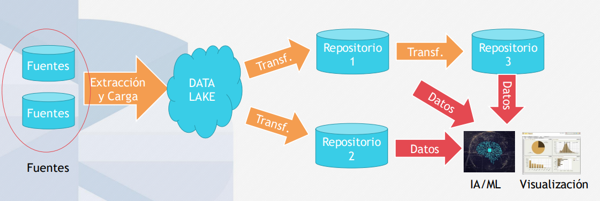
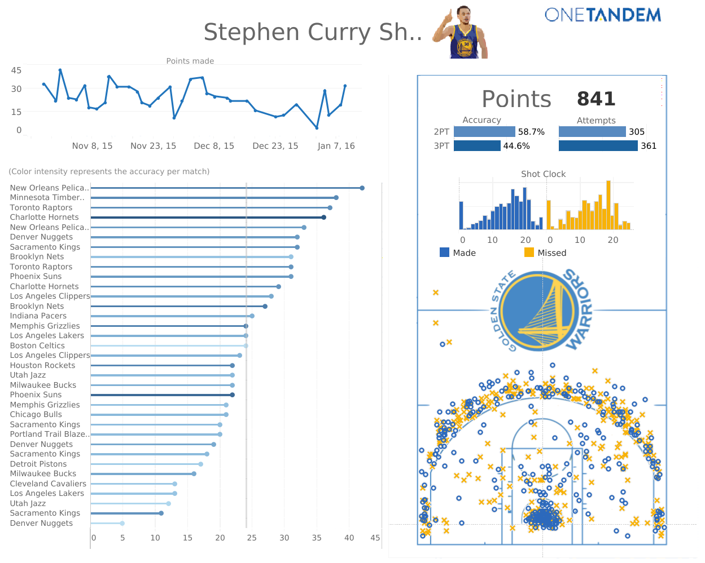
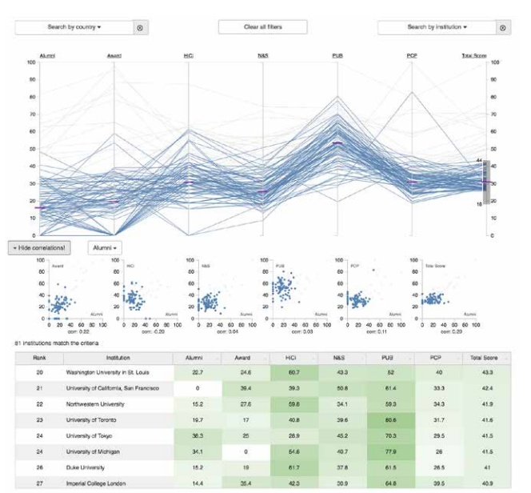
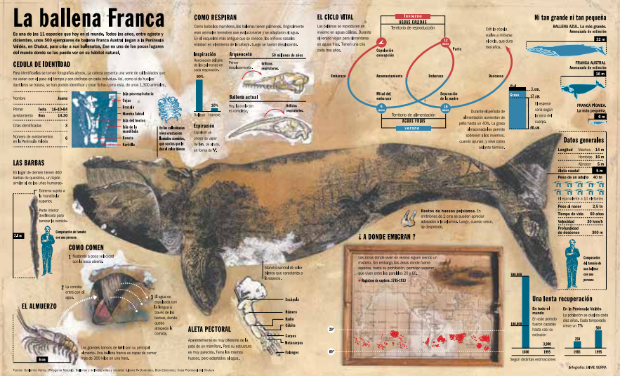

VISUALIZACIÓN DE DATOS¶
Colin Ware fue uno de los primeros investigadores en ofrecer una definición de visualización de datos. Según Ware, la visualización es:
"la representación gráfica de datos o conceptos, que tiene como resultado una imagen mental o un artefacto externo que ayuda en la toma de decisiones"
La visualización de datos es una disciplina que explica cómo tratar la información de un modo visual y que ofrece dos grandes ventajas:
-
El lenguaje visual es el más adecuado para hacer accesibles los datos a público no especialista.
-
La visualización facilita destacar cierta información en un contexto de sobrecarga informativa.
Por lo tanto, la visualización de datos es una representación gráfica de datos, pero también de conceptos y ayuda a la toma de decisiones.

¿Qué es la visualización de datos?¶
- VISUALIZAR PARA EXPLORAR: datos para responder preguntas o plantear nuevas cuestiones que ni siquiera se habían imaginado. Contribuyen a abrir un debate sobre un tema y responden a muchas preguntas, a la vez que generan otras nuevas.

-
VISUALIZAR PARA ANALIZAR: patrones, relaciones y valores atípicos entre los datos. Por lo tanto, primero se puede utilizar la visualización para analizar un conjunto de datos y extraer una serie de conclusiones, y después para explicar una historia o permitir su exploración según una serie de parámetros.
-
Cuadro de mando: es una herramienta con la que se puede controlar el estado de un sistema. Por ejemplo, un cuadro de mando financiero permite controlar los ingresos y los gastos de una organización por diferentes departamentos y segmentos de productos y clientes. Va dirigido a usuarios expertos en la temática que cubre. Por lo tanto, es muy importante entender los objetivos y los conocimientos del usuario que lo utilizará.
-
Aplicación de analítica visual: requiere de unas capacidades superiores de análisis y exploración respecto de un cuadro de mando. Podemos hablar de aplicaciones de analítica visual siempre que se puedan utilizar técnicas estadísticas para analizar los datos como por ejemplo, la media, la mediana, agrupación, etc.
-

-
VISUALIZAR PARA EXPLICAR: para comunicar y ayudar a entender adecuadamente los datos en el contexto de una historia con datos o de un propósito determinado. No sirve de nada un buen análisis si no se sabe explicar.
1.Infografía: es un componente visual que se dirige a un público ámplio donde no se suele requerir conocimientos previos del tema tratado. 
2.Narrativa por desplazamiento (scrollytelling): es una forma de narración interactiva donde el usuario debe desplazarse (utilizando la barra de desplazamiento, con el ratón o deslizando el dedo en un dispositivo táctil) para obtener más información. Es un formato exclusivamente pensado para páginas web, generalmente asociado a grandes medios de comunicación digitales.
https://www.bloomberg.com/graphics/2015-whats-warming-the-world/ Ejemplo de narrativa por desplazamiento.
3. Presentación: con herramientas como PowerPoint o similares se han convertido en un formato habitual de comunicación en las organizaciones.
4. Vídeo: los gráficos en movimiento (motion charts) se han convertido en un mecanismo habitual para transmitir datos de forma animada.
¿Cómo se elabora una visualización?¶
DEFINIENDO UNA ESTRATEGIA- Investigar.
- Definir objetivos.
- Definir indicadores.
PREPARANDO UNOS DATOS- Obtener los datos.
- Darles forma y limpiar.
- Procesar.
DISEÑANDO UNOS GRÁFICOS- Esbozar.
- Prototipar.
- Finalizar.